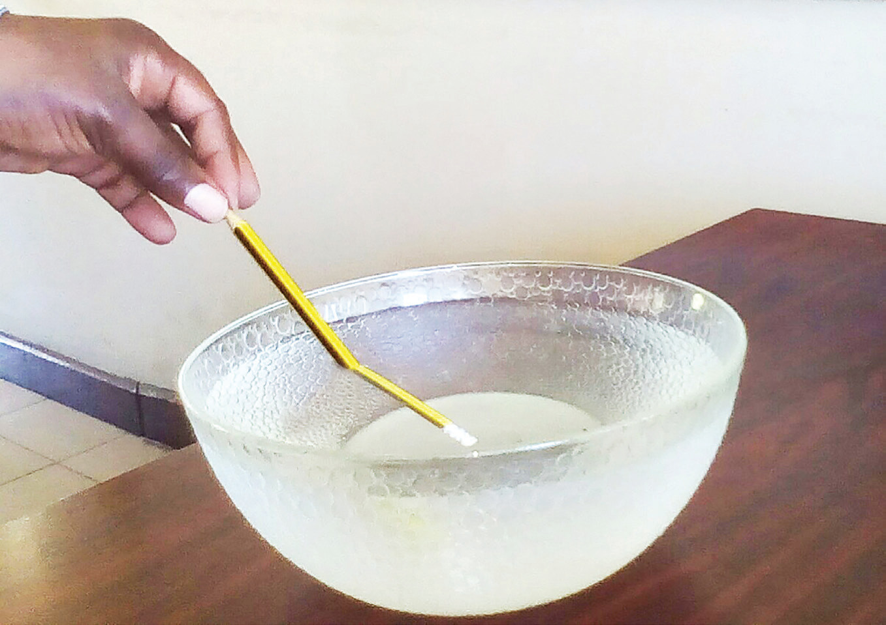

Chunguza Kielelezo namba 10, kisha fanya Kazi namba 8.

Kielelezo namba 10: Kupinda kwa miale ya mwanga
Kazi namba 8: Kuchunguza kupinda kwa miale ya mwanga
Mahitaji: Bakuli angavu au bika, maji safi ndani ya jagi, na penseli
Hatua
Chukua bakuli angavu lililo tupu au bika. Tumbukiza sehemu ya penseli ndani ya bakuli hilo ukiwa umeishikilia.
Chunguza jinsi penseli inavyoonekana.
Mimina maji kutoka kwenye jagi mpaka yafike nusu ya bakuli au bika kama inavyoonekana kwenye Kielelezo namba 10.
Chunguza tena mwonekano wa penseli iliyopo ndani ya bakuli au bika baada ya kuweka maji. Je, kuna tofauti gani kwenye mwonekano wa penseli kabla na baada ya kumimina maji?
Mwale wa mwanga ukitoka katika hewa na kuingia kwenye maji hupinda. Kupinda kwa miale ya mwanga hutokana na kutofautiana kwa midia ya hewa na maji. Matokeo ya kupinda kwa miale ya mwanga yameoneshwa na kupinda kwa penseli ndani ya bakuli angavu au bika yenye maji.